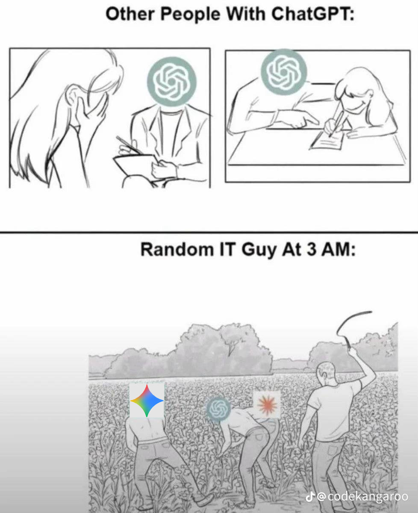

Who Wants to Be
a Programmer?
No-Bullshit Edition
Andriy Kvasnytsya · Senior Engineer, microtherapy inc
in the field since 2005
Disclaimer: I'm not a motivational speaker.
I'm a programmer.
$ survey --audience --honest
Who wants to be a programmer?
$ survey --audience --honest
Who wants to be a programmer?
Raise your hand.
And now — why?
- Money? — an honest answer.
- It's interesting? — an even better answer.
- Your parents told you to? — at least it's honest.
- Don't know, but you like math? — we respect that too.
$ survey --audience --honest
Who wants to be a programmer?
Raise your hand.
And now — why?
- Money? — an honest answer.
- It's interesting? — an even better answer.
- Your parents told you to? — at least it's honest.
- Don't know, but you like math? — we respect that too.
I raised my hand too. I love this job, but I'm not sure how much longer I get to be a programmer.
$ ./agent --autonomous --orchestrate
You already know ChatGPT. But that's already yesterday's news.
Let's be honest — it's already doing part of your homework. That's fine. But a chatbot that answers questions is the most primitive thing modern AI can do.
// chatbot — what you use
- You ask — it answers with text.
- It does nothing on its own. It just talks.
- One step: query → answer → done.
// agent — what's working right now
- Acts instead of talking: runs code, reads files, searches the internet, controls other programs.
- Decides for itself what to do next to reach the goal.
- Works across dozens of steps on its own — tries, checks, sees an error, fixes it, tries again.
Orchestration: one "manager" agent assigns tasks to a dozen others, they work in parallel and check each other — like a team of developers. The human only sets the goal and reviews the result.
$ git blame presentation.html
This presentation was made using the slave labor of Claude Code (not really — it's a paid employee of mine, and I treat it well).

$ tail -f /var/log/industry.log
What's happening in the industry right now
// facts, 2026
- Salesforce — no longer hiring engineers.
Benioff: "I'm using coding agents." $300M on AI in a year, support cut from 9,000 to 5,000.
- 2026: >113,000 layoffs in tech in under half a year.
Roughly half the companies name AI and automation as the direct cause.
- At Anthropic, AI writes 70–90% of the code (some engineers — 100%); at Microsoft and Google ~30%.
Humans are the reviewers.
// what it means
- Junior positions disappear first — 40–50% fewer openings than in 2024.
That's exactly where most people planned to get in.
- "Writing code" is no longer a sufficient skill.
- Those who understand how and why — stay. For now.
Those who just execute — don't.
But it's not magic: in 2025 Klarna replaced 700 support agents with AI — and is already bringing people back, because quality dropped. This isn't the apocalypse, it's a change of rules mid-game. It's happened before.
$ grep -r "at_risk" /professions/ --severity=NOW
Under threat right now
The vulnerability principle: repetitive + clear rules + no physical presence required
- Junior programmers — first in line. AI already writes CRUD better and faster.
- Accountants / auditors — structured data, clear rules. The perfect target.
- Copywriters / content managers — 80% of generic content is already generated.
- Translators (technical translation) — DeepL + GPT are already better than the average freelancer.
- Support agents / call centers — see Klarna above.
- Legal assistants / paralegals — an LLM reads the law better and faster.
$ grep -r "at_risk" /professions/ --severity=SOON
Under threat in the near future
Same rule. But for now there are barriers: regulation, trust, physical complexity.
- Radiologists / pathologists — AI is already more accurate on images. What remains is regulation and liability.
- Lawyers (documents, routine cases) — case preparation is being automated. The courtroom — not yet.
- Financial analysts — models are built by AI. Clients still want a human across the table.
- Teachers (standard school curriculum) — personalized AI tutoring is already better for the average student.
The barriers are real, but temporary. Regulation always lags behind technology by 5–15 years.
$ grep -r "resilient" /professions/ --explain
What will last the longest — and why
Physical presence + chaotic environment + responsibility for decisions under uncertainty = hard to automate.
- Plumber / electrician — every call is unique. A chaotic physical environment. Robots can't do it yet.
- Surgeon — tactile motor skill + unpredictable anatomy + legal liability.
- Psychotherapist — trust in a human as a human. Possibly the longest-lasting of all.
- Trial lawyer — the theater of persuasion before living judges and juries.
$ apt-get install future-proof-skills
Which skills will probably stay useful
Not a list of technologies. Technologies change. Principles — less often.
- The ability to learn faster than knowledge goes obsolete — the only skill with a guaranteed shelf life.
- Math and logic — the foundation of the thing that's displacing everyone else.
- Understanding systems — not "how to write it," but "why it works this way" and "what happens if."
- Communication and persuasion — AI bears no responsibility. A human does.
- Critical thinking — AI lies confidently. Someone has to notice.
$ git log --all --oneline --revolutions
This has happened before
~1800 — The Industrial Revolution. Manual production replaced by machines. 80% of the population in agriculture and crafts. The Luddites smashed the looms.
1900 — 40% of Americans in agriculture. Today — 2%. Where did the people go? Factories, offices, and services appeared.
1980–2000 — The personal computer. "Machines will take all the jobs!" What appeared: web designer, UX researcher, system administrator, SEO specialist. None of these existed in 1970.
2020+ — AI. New professions will definitely appear. Which ones exactly — nobody knows. Nobody in 1990 could have predicted "prompt engineer."
Every revolution destroyed some jobs and created others. But maybe this isn't even the revolution worth comparing it to.
$ git log --all --oneline --since="10000 BC"
And yet — there's an even more precise analogy
The industrial revolutions are little candles. The real supernova came earlier.
// ~10,000 BC — the Neolithic Revolution
- Technology: domestication of plants and animals, later the plow
- Wiped out: hunters, gatherers, nomadic chiefs — 100% of prior professions
- Appeared: farmers, artisans, priests, scribes, merchants, rulers — i.e. all of subsequent civilization
AI + physical robots = the potential for a shift of the exact same scale. What that will mean for us personally — we'll come back to that at the end. Because first — the difference that didn't exist back then.
$ diff neolithic.log industrial.log ai.log --speed
But there is one critical difference
The Neolithic Revolution — unfolded over millennia. Society adapted imperceptibly for any individual. Nobody felt the transition.
The Industrial Revolutions — decades. Painful, but a generation had time to adapt. The children already lived differently.
Now — within a single generation. Maybe a single decade. Education, law, social safety nets, cultural norms — all of it adapts over decades. The technology — over years.
The real reason for concern isn't "robots will take the jobs." It's that society's speed of adaptation lags catastrophically behind the speed of the technological shift. We're living right on that gap, and it has already begun.
$ python3 economics.py --horizon=post-singularity
The economy — and what's on the other side
The promised "what this means for us": it's not just "losing a job," it's leaving a 10,000-year era where survival required labor — just as the farmer once didn't "lose hunting," but moved into a qualitatively different order.
// the good news
- Consumer deflation — what used to cost $10,000 in legal services will soon cost $20/month.
- Everything gets cheaper — medicine, education, software, data analysis.
- Productivity — one person does what a whole team used to.
// the hard questions
- Unemployment — if there's less work but the same people. Who solves it and how — unknown.
- Wealth concentration — the gains go to the owners of AI, not the laid-off.
- The social contract — "study and work" as the formula for success may change.
A possible order: AI takes on the routine, a human works only when they want to, UBI or an equivalent. Utopia? Dystopia? The honest answer — nobody knows: for the first time in human history, "what's next?" has no answer. And it may arrive within our lifetime.
$ echo "conclusion" && exit 0
Conclusion
You'll probably have to learn and change jobs more than once. It's not a punishment — it'll be the same for everyone.
But there's a decent chance we'll live to see a time when we work only when we want to — and for our own enjoyment, not for survival.
More than that — we all have a chance to have a hand in making it happen.
Q&A · A warning up front: "which exact profession should I pick so all of this passes me by?" — I don't know. I don't think one exists.